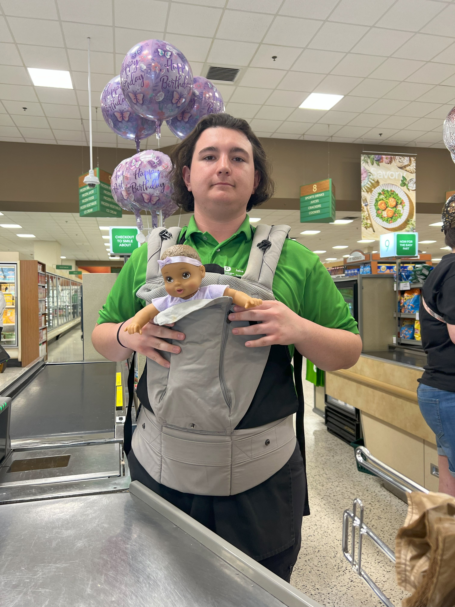
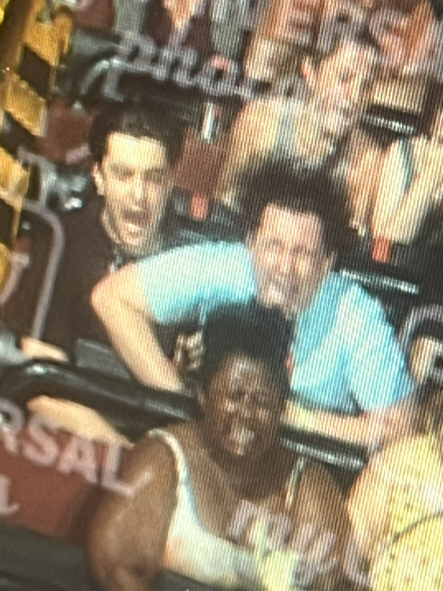
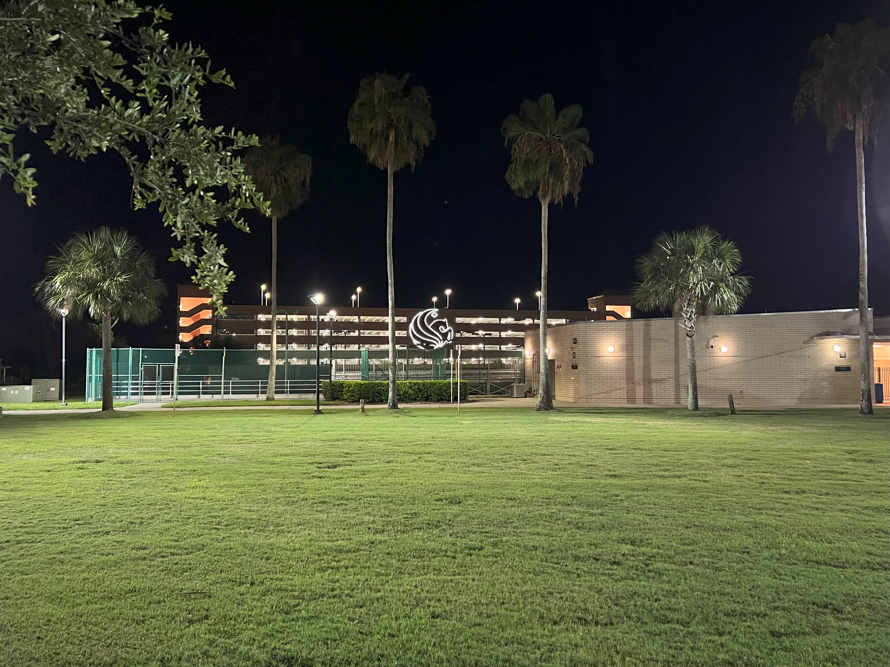
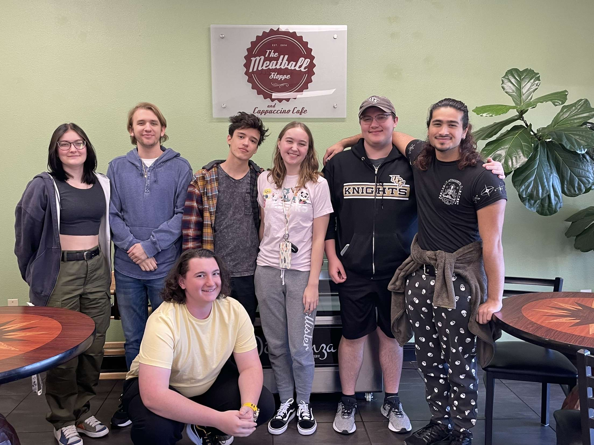
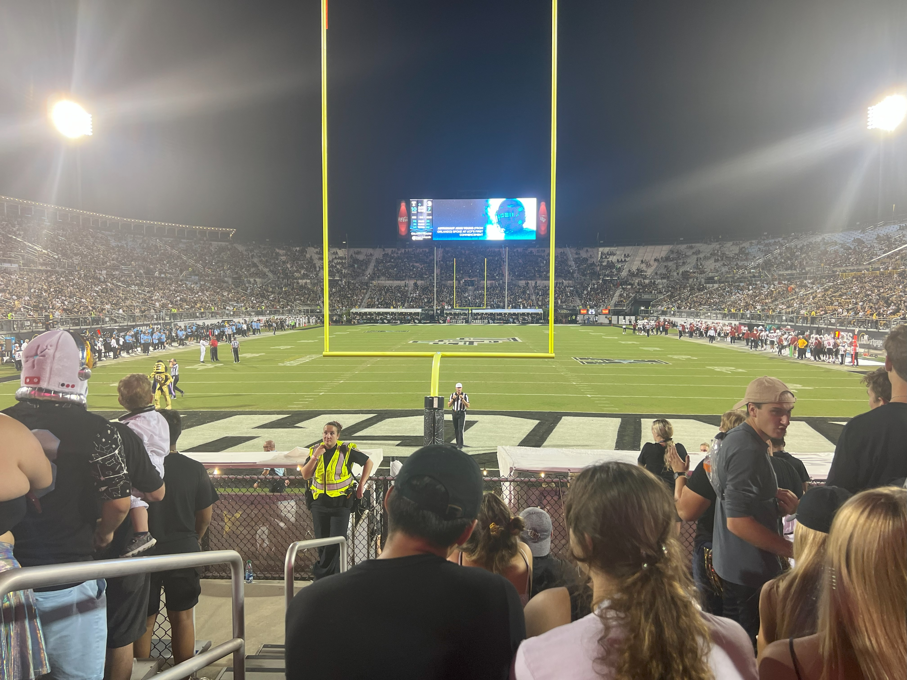
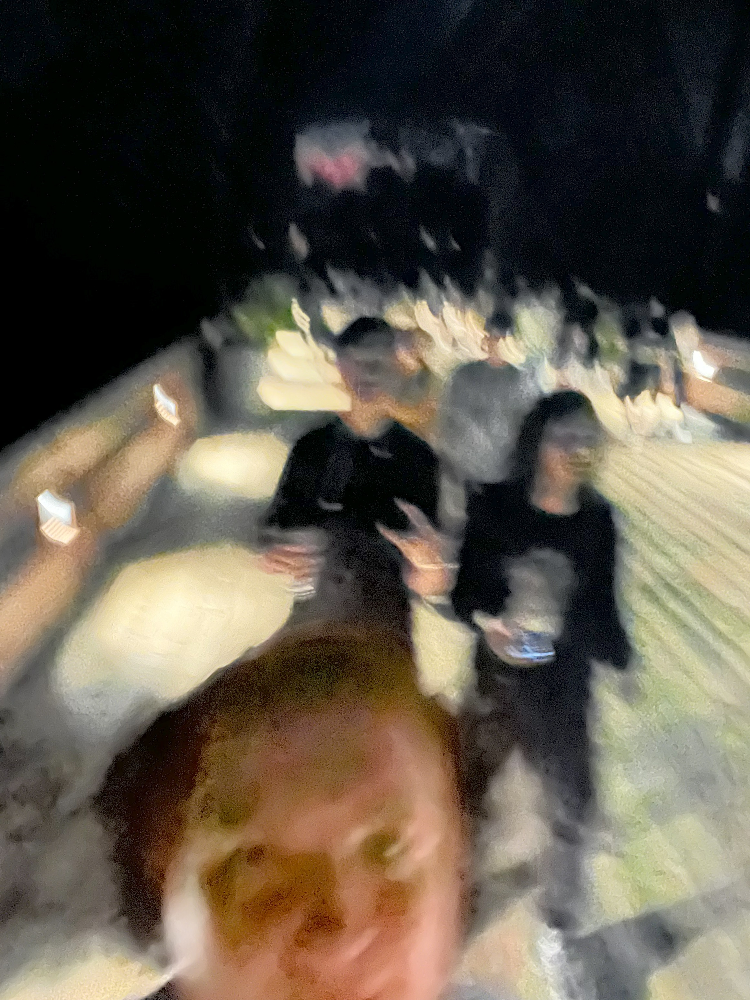
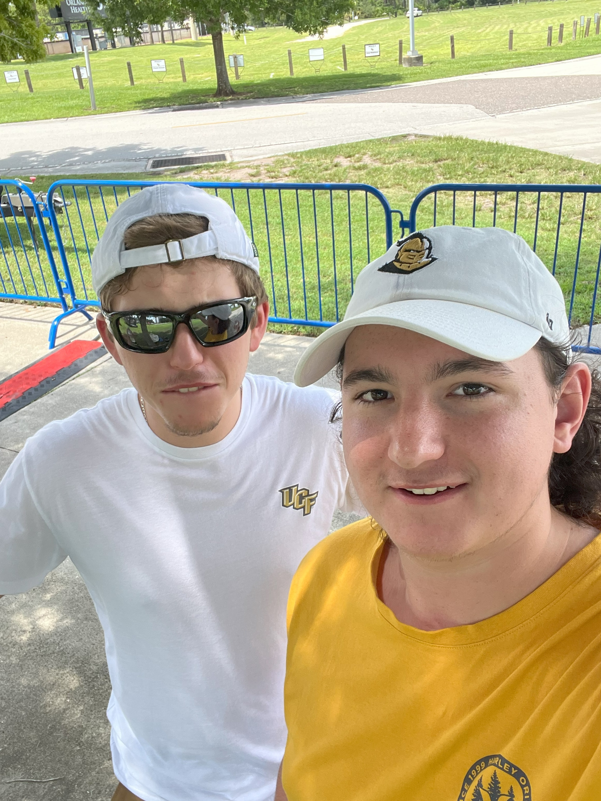
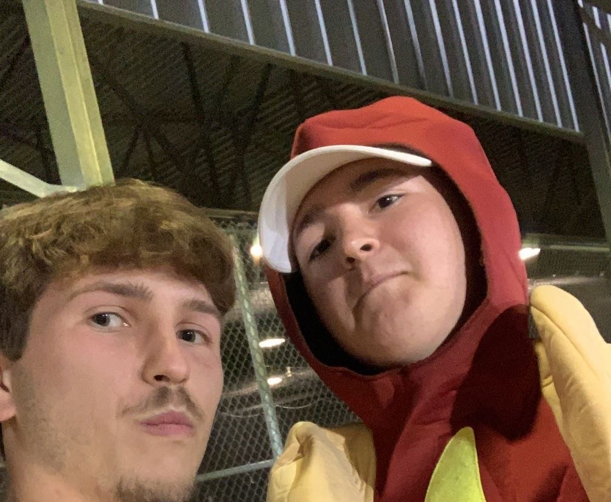

I am nearing the end of my first year here at UCF. I have been able to start off my college career with a bang. Many experiences have come and gone throughout this last year. I have made many friends and grown apart from some. However, I know I still have a couple of great years ahead of me and will make more memories and more friends as I continue my journey to receive my diploma. I am currently pursuing a BS in Digital Media, specifically the Web Design Track. Below is my journey through my first 3 semesters here to get to the point I am at now.
I started at UCF in the summer of 2022. I took two classes that did not necessarily go toward my degree. I entered college hoping to pursue a degree in Graphic Design and at this point was just wanting to get used to the campus so I could work on this goal in the fall. I made friends with my two roommates and even though we all had varying degrees we got along well and regularly played games and ate together because in all honesty there is not much else to do in the summer. I had been working at Publix for 3 years prior to arriving at UCF and started at a new store over the summer. I was lucky to be surrounded by many people that were able to share their experiences of their first year with me here and I was planning on taking many of their stories with me into my first year.
When fall rolled around I knew that I would be working hard and submitting my portfolio by the end of that semester. I enjoyed my classes for the first couple of weeks and before I knew it some of the classes I had enjoyed before I felt miserable going to. It had nothing to do with not talking to my classmates or the intensity of the work. I realized that I just did not like that type of work. That did not mean that I would stop trying. So continued through. At the same time, outside of classes, I was making even more friends doing weekly game nights, and soon enough we all just started hanging out without the stipulation of it having to be a game night to do so. Near the end of the semester, I was on the line as to whether to submit a portfolio because I did not enjoy the work from the year, but I did it anyways just to know if I would have made it. Soon enough we entered winter break.
When spring rolled around, I found out that I did not make the cut to pursue a degree in Graphic Design. I was not entirely upset since I was on the fence when I submitted the application in the first place. I had applied to some classes in my backup major which is Digital Media and so after a couple of weeks of really enjoying these classes and still enjoying them now, I have applied to the major and will be accepted if I get a B or higher in my Video Fundamentals class. My friends and I still go strong to this day and are going to do something big for the end of our first year here. Work has had up and downs, bat all in all it has been a much better experience than it was at my last store.